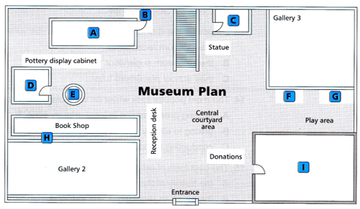

Complete the form below.
Advice on plumbers and decorators
Example
Make sure the company is : local
Complete the form below.
| Name | Positive points | Negative points |
|---|---|---|
| Peake's Plumbing |
· Pleasant and friendly · Give 3 information · Good quality work |
· Always 4 |
| John Damerol Plumbing Services |
· 5
than other companies · Reliable |
· Not very polite · Tends to be 6 |
| Simonson Plasterers |
· Able to do lots of different 7 |
· More 8 than other companies |
| H.L. Plastering |
· Reliable · Also able to do 9 |
· Prefers not to use long 10 |
Choose the correct answer, A, B or C.
Label the plan below.
Write the correct letter, A-I, next to questions 16-20

Complete the form below.